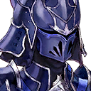

|
|
| |
『この先は
遺書に書けず終いの物語だが』 |
| |
『“君”の本音が
幾通もの手紙に見えた』 |
 |
| “君” |
――…！ |
| |
『“君”の口から漏れるのは、掠れた吐息だけ
声は雨音よりも聞こえない』 |

ザイン |
… |
| |
『俺は“君”の口を手で塞ぐ』 |
ザイン |
言わなくていい |
| “君” |
――…!! |
|
|
| |
『死の淵でもわかった
慟哭する“君”の、音のない哭き声が』 |
| ？？？ |
… |
| “君” |
!! |
| ？？？ |
… |
| |
『お前の名前は、知っている』 |
ザイン |
…………ユ、ヴェ、ン |
| ？？？ |
…ザンネン |

ソル |
…俺の名はソル |
ザイン |
ソ、ル…？ |
ソル |
アンタと同じ――“空白”だ |
|
| |
再び追憶が
演じられ始める |
| |
演者を変え、解釈を変え
劇場を渡り、激情を込めて |
| |
これは
光差す“舞台”より語られる
聖者、幕引きの物語 |
ソル |
宛名が違うね |
|

オーティマ |
まだ正月気分でいたら
いつの間にか半年以上過ぎてた
なんてことあるよな |
オーティマ |
だってまだ
なんの整理もついちゃいないんだぜ？ |
 |
オーティマ |
らしくない |
| |
現在
ノーザンブライド・書物蔵 |
オーティマ |
らしくないよ
もう、カノンも俺も、こういうの |

カノン |
でもしっかりやらなきゃ |
オーティマ |
気負い過ぎだよ |
カノン |
…ザイン様、も、亡くなって―― |
オーティマ |
… |
カノン |
クダン団長は行方不明…
グリードダイクとは冷戦状態… |
オーティマ |
そんな中
新ロードマスターとなったカノン様は
毎日毎日、書類の山と戦争状態… |
カノン |
グ… |
オーティマ |
そして書類の片づけが終わったら
こうして日がな書物蔵の整理… |
カノン |
か、紙が、紙がニクイ…！ |
オーティマ |
聖教騎士団の長
ロードマスターの道は険しいね泣けるね |
カノン |
自信なくて…全然 |
オーティマ |
…まあねえ～、皆の期待を背負っちゃあねえ |
カノン |
『この程度のことで音を上げるなんて
華麗じゃないわ』 |
オーティマ |
お。雑務を捨てて
地方任務に逃げたヤウラス団長 |
カノン |
『さっさと片づけなさい、非効率だわ』 |
オーティマ |
お。久々に帰省するという言い訳で
俺たちを見捨てたセーダ団長 |
カノン |
ノイローゼになっちゃう…！ |
オーティマ |
『何してるのよォ、オバカノンん』 |
カノン |
あっ、幼馴染を置いて
『海を見に行く』と言い残して
どっか行ったカグラ団長 |
オーティマ |
何それデート？ |
カノン |
どうでしょう |
オーティマ |
くッそ～！ デートしてえ～ |
カノン |
すっぱ抜かれて
一大スキャンダルになれ～ |
オーティマ |
あ |
カノン |
？ |
オーティマ |
みっけ |
カノン |
オーティマ団長？ |
オーティマ |
新人ロードマスターカノンくん |
カノン |
は、い…？ |
オーティマ |
こちらの書物を献上いたします |
カノン |
な、なんでしょう
これ…日記…？
どなたの………… |
オーティマ |
カノンってさ
推理小説とか、うしろから読むタイプでしょ |
カノン |
えっ、そ、ん、な、こと、ナイデスケド？ |
オーティマ |
せっかちだもんなあ |
カノン |
だったらなんです！ |
オーティマ |
コレは、ちゃんと読むこと |
カノン |
これ… |
オーティマ |
先代ロードマスター、ザイン様の |
カノン |
え…？ |
オーティマ |
遺書 |
カノン |
…っ!? |
カノン |
ま、待ってください！ |
オーティマ |
… |
カノン |
ロードマスターとなれば
万一に備えた書置きを残すことは
あるかもしれません… |
カノン |
でも、こんな形で遺書だなんて…！ |
カノン |
ザイン様は戦いの中で亡くなったんです…！
それなのに、これじゃあ
まるで…ザイン様が………… |
オーティマ |
だからさ |
カノン |
…？ |
オーティマ |
遺書じゃないかもしんない |
カノン |
え…？ |
オーティマ |
遺書じゃないなら
ナンなんだろうね |
オーティマ |
…俺じゃあ、整理つかなくってさ |
カノン |
… |
| 日記 |
『正直、自信はない』 |
カノン |
…………えっ |
|
| 日記 |
『自分で十代目』 |
| 日記 |
『先人たちから脈々と受け継がれてきた
聖教騎士団の“絶対正義”を
自分が背負うことができるのだろうか』 |
| 日記 |
『誰に宛てれば良いのか、この…』 |
 |
| 遺書 |
『遺言を』 |
ザイン |
さあ |
| 遺書 |
『まずは追憶から』 |
ザイン |
始めるぞ |
 |
| |
追憶
スロウスシュタイン・遺跡 |
オーティマ |
ようやく始まったところ悪いんだけど |
オーティマ |
残念でした
これにて終了です…っと |
 |
| ユヴェン |
よう。ゴブサタ |
| フードの男 |
寄り道ついでに、探し物をな |
| ユヴェン |
マメなヤツ |
| フードの男 |
労を惜しまんよ
世界平和の為なら |
| ユヴェン |
喋ることは何もないね
何度来たって |
| フードの男 |
ならば邪魔をする義理はなかろう？ |
| ユヴェン |
気にくわないんだよ |
| フードの男 |
ほう？ |
| ユヴェン |
世界平和なんて |
|
オーティマ |
バチがあたったかなァ |
ザイン |
なんのだ。オーティマ |
オーティマ |
“おふたり”の
デートの邪魔しちゃって |
ザイン |
任務だ |
オーティマ |
ザイン様～照れなくても |
ザイン |
働け。オーティマ |
オーティマ |
了～解っ |
ザイン |
!? |
| フードの男 |
――――はじめまして |
オーティマ |
怪しいヤツ！
明らかに怪しいヤツ！ |
ザイン |
名乗れ！ |
| フードの男 |
その力――…いかほどか |
ザイン |
くっ…！ |
| フードの男 |
おぬしらの動きは、わかるよ
ずぅっと前からな |
ザイン |
攻撃が先読みされている…!?
何者だ…!? |
| フードの男 |
良い機会だ
逃げ道も塞いでしまおうか |
オーティマ |
ザイン様！
ガールフレンドはっ!?
どこいったんすか!? |
ザイン |
ガールフレンドじゃない！ |
オーティマ |
照れ屋さん！ |
ザイン |
口を閉じろ！ |
| ？？？ |
呼んだ？ 照れ屋さん |

敵兵 |
グアアアアァァァッッ!?!? |
| ？？？ |
手加減したことないんだ。ごめんね |
| フードの男 |
…………素晴らしい |

カヤ |
モテモテだね。ザイン？ |
ザイン |
…どこにいた |
カヤ |
妬けちゃうな…
デートの途中で
こんなたくさんの人に構われて |
オーティマ |
ホラやっぱり～ |
ザイン |
でっ…、デートのつもりだったのか |
カヤ |
ふふ。どうかな？ |
| フードの男 |
おぬしは… |
カヤ |
こんにちは。ストーカーさん
あまりしつこいと困っちゃうな。お姉さん |
| フードの男 |
… |
カヤ |
顔を見るのは初めてかな？
あれっ、でも顔は見えないね
ストーカーさんはシャイなのかな？ |
| フードの男 |
聖教騎士団第二騎士団団長
“紅竜姫”カヤ… |
カヤ |
身バレしてるの？ 怖いね |
| フードの男 |
今日は警告だ。カヤ |
カヤ |
警告？ |
| フードの男 |
“ここ”からは手を引け |
カヤ |
なんの話かな |
| フードの男 |
さあて |
カヤ |
守ってよ。ボーイフレンド |
オーティマ |
ほらあ |
ザイン |
その呼び方をやめろ |
カヤ |
じゃあ。お願いね |
| カヤ・オーティマ |
ロードマスター |
| フードの男 |
庇い立てするつもりか |
ザイン |
無論だ |
|
カノン |
『平和を守り、悪を討つ
当たり前の意志こそが
聖教騎士団の譲れぬ道』 |
| ザイン・カノン |
『大陸の“絶対正義”』 |
カノン |
『地上より海の底まで
すべてに宛てた光となる』 |
ザイン |
この聖剣を前にしてなお
歯向かう者がいるならば―― |
|
| ザイン・カノン |
『影すら明るみになると知れ』！ |
| フードの男 |
第十代ロードマスター、ザイン… |
ザイン |
世界を導く光に抱かれよ!! |